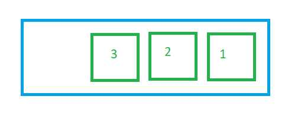
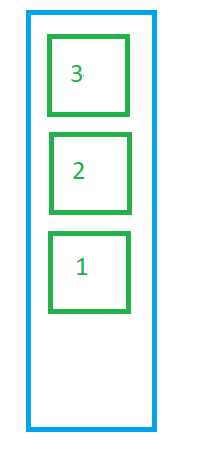

La primera propiedad que podemos configurar cuando implementamos una caja flexible se llama flex-direction. Por defecto esta propiedad se inicializa con el valor "row".
Los valores que podemos asignarle a la propiedad "flex-direction" son:
Cuando la propiedad flow-direction almacena el valor "row" los items se ubican uno al lado del otro es decir en forma horizontal y se respetan el orden de los items (valor por defecto):

Si almacenamos el valor "column" en la propiedad flex-direction luego los item se disponen uno debajo del otro:

Tenemos la posibilidad que los items se muestren al revés, es decir el último sea primero, el ante anteúltimo sea segundo y así sucesivamente:
 Ejemplo:
flex-direction: row
Flex-direction: column
Flex-direction: row-reverse
Flex-direction: column-reverse
Si queremos que la caja flexible sea vertical es necesario asignar a la propiedad flex-direction el valor "column". Cuando es horizontal no es necesario asignar el valor "row" ya que es el valor por defecto que se inicia la propiedad.